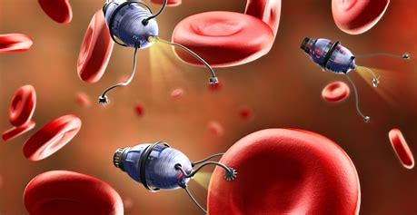
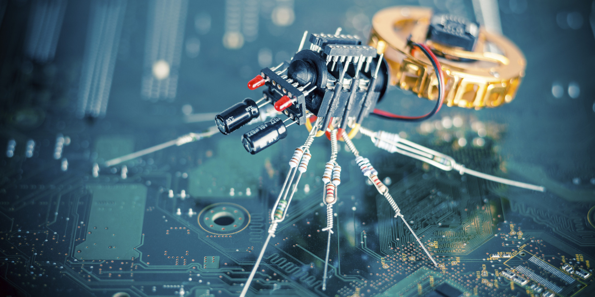

Nanotehnologia se referă la manipularea materiei la scară foarte mică, la nivelul nanometric. În medicină, aceasta implică utilizarea nanoparticulelor și a nanoroboților pentru a trata afecțiuni specifice la nivel celular sau molecular în corpul uman.

Viitorul nanotehnologiei
În lumea „Star Trek”, mașinile numite replicatoare pot produce aproape orice obiect fizic, de la arme la o ceașcă de ceai fierbinte Earl Gray. Considerat pentru mult timp ca fiind exclusiv produsul SF-ului, astăzi unii oameni cred că replicatorii sunt o posibilitate foarte reală. Ei o numesc fabricare moleculară și, dacă va deveni vreodată realitate, ar putea schimba drastic lumea.

Atomii și moleculele stau lipiți împreună pentru că au forme complementare care se blochează una cu cealaltă sau au încărcări care se atrag. La fel și magneții, un atom încărcat pozitiv se va lipi de un atom încărcat negativ. Deoarece milioane de atomi sunt asamblați împreună de nanomașini, un produs specific va începe să capete formă. Scopul fabricării moleculare este de a manipula individual atomii și de a-i plasa într-un model pentru a fabrica un anumit obiect.
Nanotehnologia poate avea un efect pozitiv asupra mediului. De exemplu, oamenii de știință ar putea programa nanoboți în aer pentru a reconstrui stratul subțire de ozon. Aceștia ar putea să înlăture contaminații din sursele de apă și ar putea curăța scurgerile de petrol. Materialele de fabricație care folosesc metoda inversă a nanotehnologiei poluează și mai puțin față de procesele de fabricație convenționale. Dependența noastră de resurse neregenerabile s-ar diminua cu ajutorul nanotehnologiei. Tăierea copacilor, mineritul sau forarea petrolului nu ar mai fi necesare – nanomașinile ar putea produce aceste resurse.